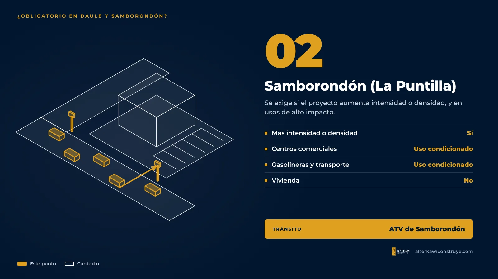

¿Es obligatorio el estudio de impacto vial en Daule y Samborondón?

Es una de las preguntas que más nos hacen las empresas que quieren construir en La Aurora o en La Puntilla. La respuesta corta: sí, pero no para todos los proyectos. Las viviendas y casas pequeñas no lo necesitan. Los proyectos grandes sí: centros comerciales, galpones industriales, edificios de oficinas, empresas de transporte, clínicas o gasolineras.
Daule (La Aurora): qué dice el trámite
El trámite oficial de Emisión de permiso de construcción inicial o por aumento del Municipio de Daule tiene un grupo de requisitos especiales para las edificaciones comerciales y de servicios con afluencia masiva de público. Ahí entran los proyectos multifamiliares, educativos, comerciales, de salud y terminales de transporte, y otros parecidos.
Para esos proyectos se pide, además de los planos y documentos de siempre:
- Estudio de tráfico interno y externo aprobado por la ATM de Daule. El interno revisa la circulación dentro del predio (parqueos, rampas, acumulación de vehículos). El externo revisa cómo afecta el proyecto a las vías que lo rodean.
- Informes técnicos y planos aprobados por las empresas de servicios: Cuerpo de Bomberos, CNEL, EMAPA-Daule, AMAGUA y CNT.
- Autorización ambiental, con su certificado y el mapa de intersección, emitida por la autoridad ambiental competente.
El trámite no pone un mínimo de metros cuadrados ni de pisos para el estudio de tráfico: lo que lo activa es el uso del edificio y la cantidad de gente que va a atraer.
Lo que no hay que confundir: la regla de los tres pisos
En Daule hay requisitos que sí dependen de la altura, pero no son el estudio de tráfico. Desde tres pisos se exige una póliza de seguro a favor de terceros del 8 % del avalúo de la obra (para construcción inicial, aumento o remodelación) y un estudio de suelos para edificaciones nuevas. Un edificio de tres pisos de vivienda unifamiliar paga la póliza, pero no necesita estudio de tráfico. Un edificio de tres pisos de departamentos necesita las dos cosas.
Samborondón (La Puntilla): qué dice la ordenanza

La Ordenanza Sustitutiva a la Ordenanza de Edificaciones para la Parroquia Urbana Satélite La Puntilla (Registro Oficial, Edición Especial 2773, 29 de noviembre de 2021) no tiene un capítulo propio de impacto vial como la de Guayaquil, pero sí lo exige en dos situaciones:
- Cuando el proyecto pide más intensidad o más densidad de la que permite la norma del sector. En ese caso, además de los informes de las empresas de servicios básicos, se deben presentar los estudios de impacto ambiental y de impacto de tráfico que la ley exige.
- Usos condicionados de alto impacto: gasolineras y estaciones de servicio, instalaciones de transporte y centros comerciales. Son los proyectos en los que el Municipio revisa con más cuidado los accesos y el tráfico antes de aprobarlos.
El tránsito del cantón lo maneja la ATV (Empresa Pública Municipal de Tránsito, Movilidad y Vigilancia Ciudadana de Samborondón), y el registro de construcción lo emite la Dirección de Edificaciones del Municipio. Por la avenida Samborondón circulan cerca de 110.000 vehículos al día, según el propio Municipio, y la presión de vecinos y especialistas para que cada proyecto justifique su impacto es cada vez mayor. En la práctica, una plaza comercial o un edificio sobre la avenida debe llegar con su estudio de tráfico listo.
Tabla rápida: ¿mi proyecto lo necesita?
| Tipo de proyecto | Daule (La Aurora) | Samborondón (La Puntilla) |
|---|---|---|
| Casa unifamiliar | No | No |
| Ampliación o remodelación de vivienda | No | No |
| Edificio de departamentos (multifamiliar) | Sí, aprobado por la ATM | Sí, si aumenta intensidad o densidad; consultar en los demás casos |
| Plaza o centro comercial | Sí | Sí (uso condicionado) |
| Galpón industrial o bodega | Sí | Sí |
| Edificio de oficinas | Sí | Sí |
| Empresa o terminal de transporte | Sí | Sí |
| Local comercial pequeño | Según la afluencia de público | Según la zona y los parqueos; consultar |
| Clínica o colegio | Sí | Sí, en la práctica |
| Gasolinera | Sí | Sí (uso condicionado) |
Tabla referencial. El alcance exacto lo define cada municipio para el predio y el uso concretos.
Cómo evitar sorpresas
- Confirme antes de diseñar. En Samborondón, pida las normas de edificación del solar y consulte en la Dirección de Edificaciones y en la ATV. En Daule, revise la línea de fábrica y el uso de suelo, y consulte a la ATM si su proyecto entra en el grupo de afluencia masiva.
- Póngalo en el cronograma. El estudio de tráfico se aprueba antes del permiso, así que una demora aquí detiene toda la obra.
- Póngalo en el presupuesto. El estudio es un gasto a terceros (conteos, análisis y revisión) que conviene prever desde la propuesta.
- Diseñe los accesos desde el inicio. Ubicación de entradas y salidas, espacio de cola dentro del predio, número de parqueos y zona de carga. Si esto se resuelve en el anteproyecto, el estudio sale más rápido y sin rediseños.
Preguntas frecuentes
¿Una casa en La Aurora o La Puntilla necesita estudio de impacto vial?
No. Una vivienda unifamiliar no lo necesita en Daule ni en Samborondón. El estudio se pide para proyectos que atraen mucho público o aumentan la densidad.
¿Quién aprueba el estudio de tráfico en Daule?
La ATM de Daule. El estudio de tráfico interno y externo aprobado es un requisito especial del permiso de construcción para edificaciones con afluencia masiva de público.
¿Quién revisa el tráfico en Samborondón?
La ATV, empresa municipal de tránsito del cantón, junto con la Dirección de Edificaciones, que emite el registro de construcción.
¿Un edificio de tres pisos en Daule necesita estudio de tráfico por tener tres pisos?
No por la altura. Desde tres pisos se pide la póliza del 8 % y el estudio de suelos. El estudio de tráfico depende del uso: si es multifamiliar o comercial, sí se pide.
Si su proyecto está en Guayaquil, las reglas son otras y dependen del número de parqueaderos: lo explicamos en Estudio de impacto vial en Guayaquil: qué es y cuándo es obligatorio. Para ver todos los demás requisitos de estos dos cantones, lea Permisos de construcción en Daule y Samborondón.
Información referencial basada en la normativa y los portales municipales vigentes a noviembre de 2026. Cada proyecto debe verificarse con la entidad correspondiente.

¿Su proyecto en La Aurora o La Puntilla necesita estudio vial?
Revisamos su predio y su uso, le decimos qué estudios aplican y llevamos el trámite completo hasta el permiso.

Arquitecto en Guayaquil, Samborondón y Daule. Permisos municipales y obra para viviendas y empresas.
- gob.ec – Emisión de permiso de construcción inicial o por aumento (Municipio de Daule)
- Municipio de Samborondón – Ordenanza sustitutiva de edificaciones para La Puntilla (R.O. E.E. 2773, 2021)
- ATV – Empresa Pública Municipal de Tránsito, Movilidad y Vigilancia Ciudadana de Samborondón
- Municipio de Samborondón – Boletín de prensa sobre la reestructuración de la avenida Samborondón (2024)
- Ecuavisa – Expertos advierten que ampliar la vía no resolverá el problema de fondo en Samborondón